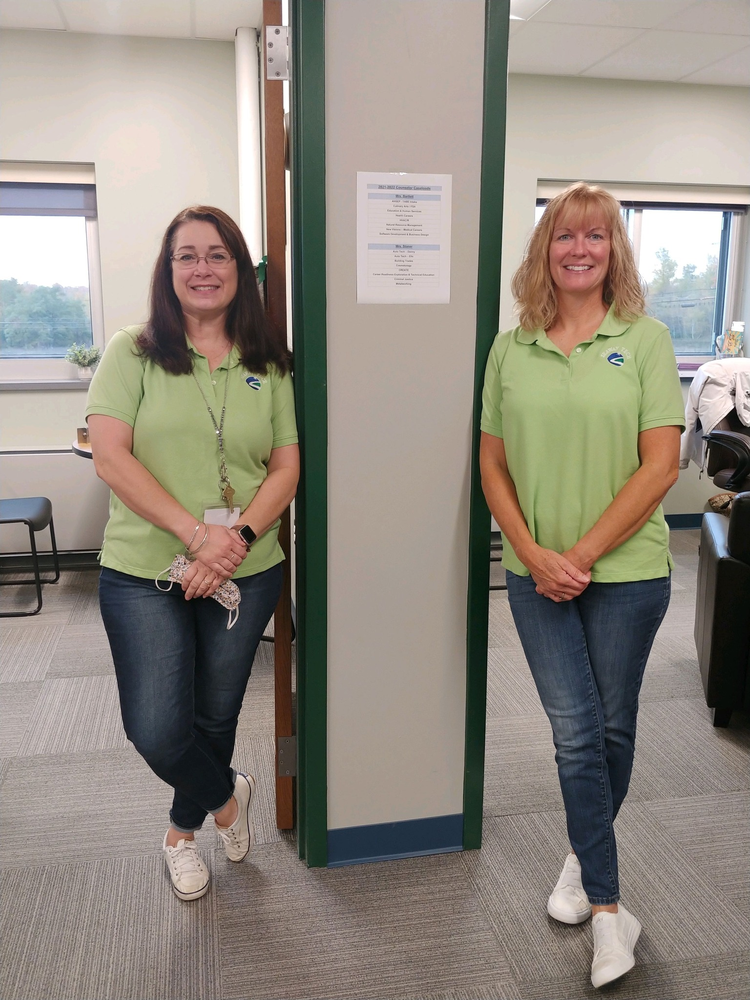

We are student-centered professionals who provide social, emotional, academic, career and crisis counseling within Career and Technical Education and Alternative Education programming.
We assist students in developing effective problem solving, decision making, conflict resolution skills, goal setting, career planning, and general life skills. We also foster a school environment that promotes good citizenship, collaborate with home schools to address student needs, and provide assistance in facilitating services for students.
We assist students in developing effective problem solving, decision making, conflict resolution skills, goal setting, career planning, and general life skills. We also foster a school environment that promotes good citizenship, collaborate with home schools to address student needs, and provide assistance in facilitating services for students.
Like us on Facebook 